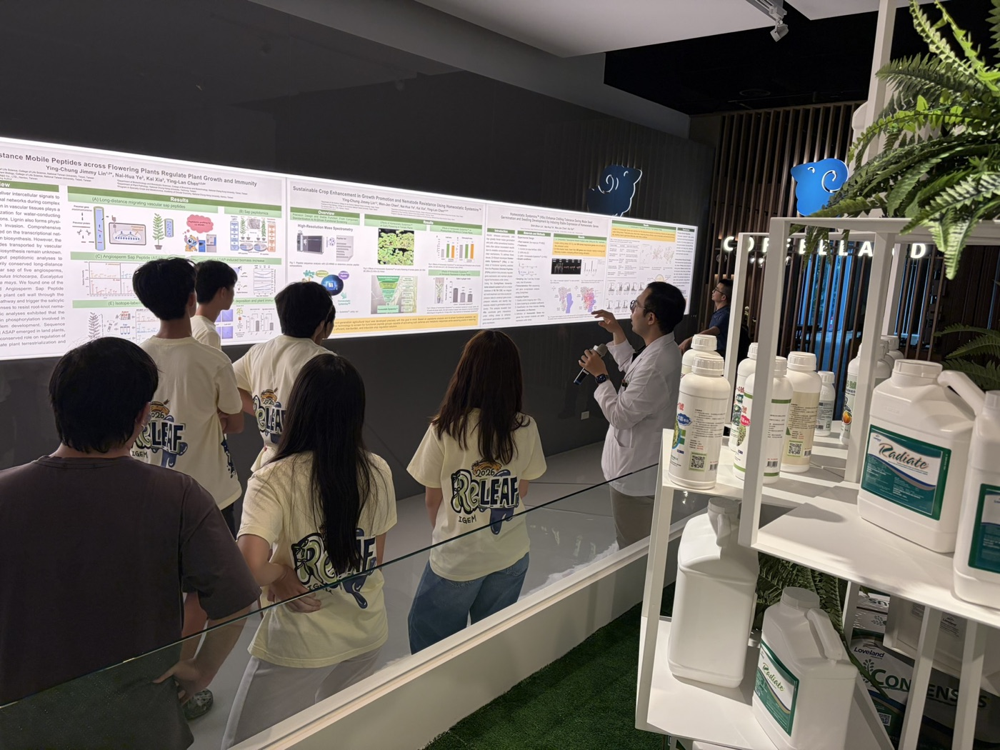
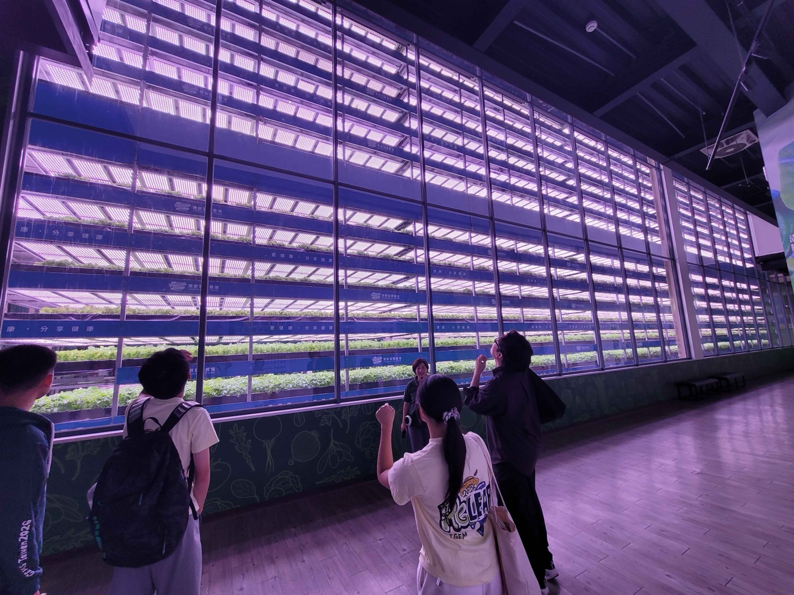
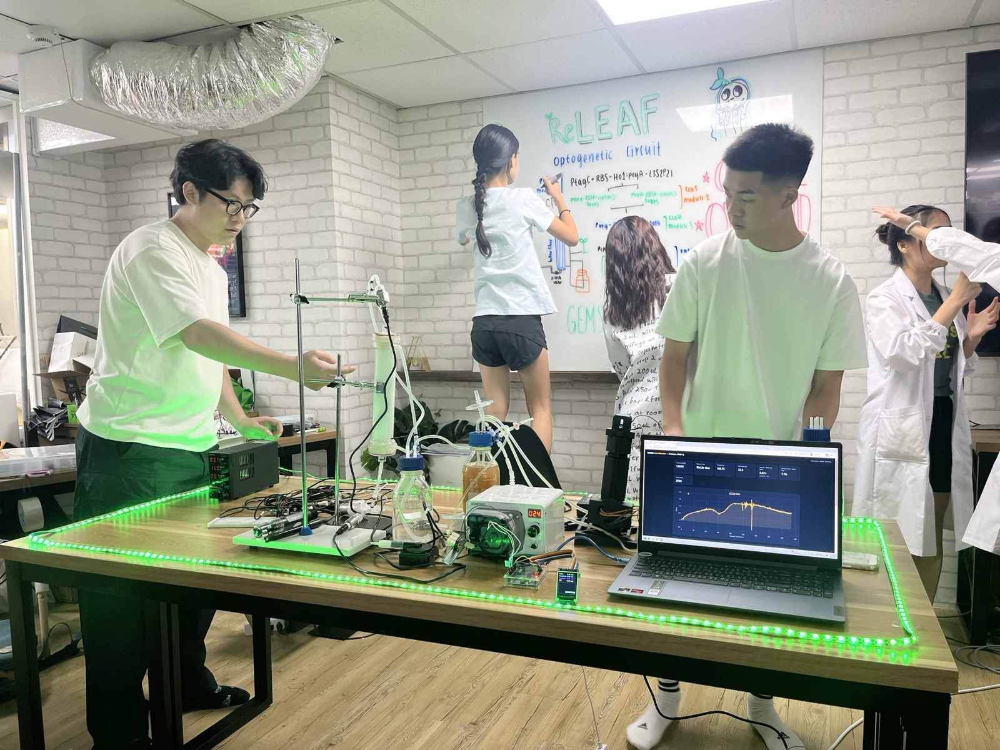
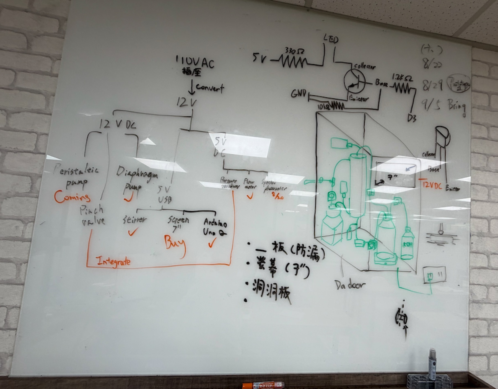
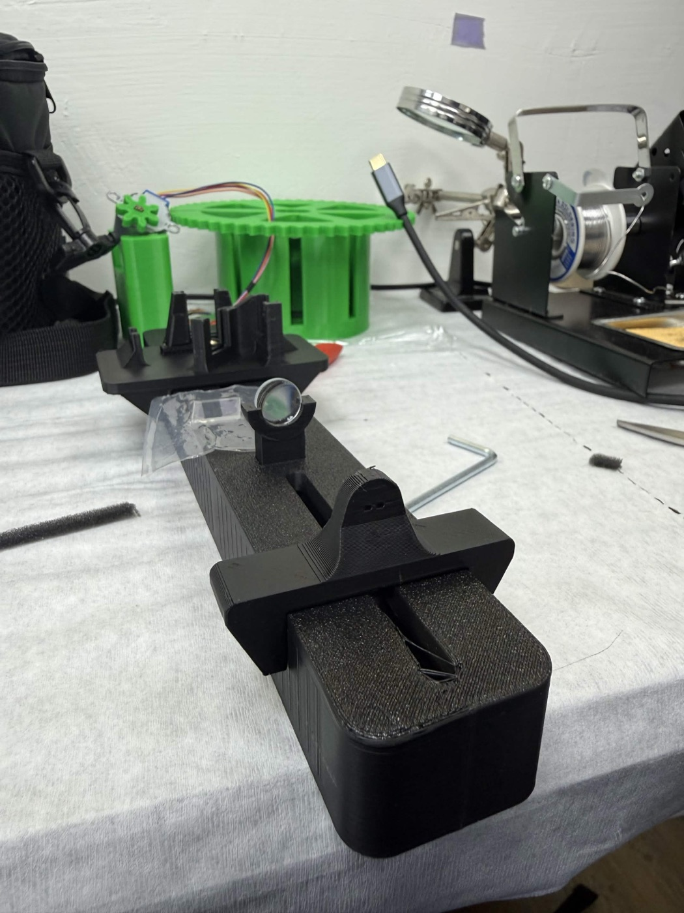
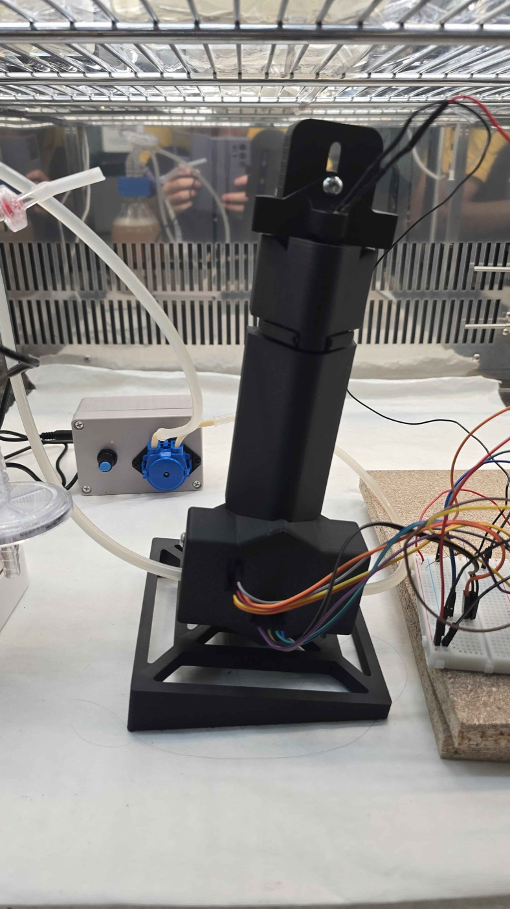

Prof. Chang, thank you for coming to GEMS on 18 June. We wrote down what you told us that
day and worked through it item by item. This page is the report back.
Bioprotectants are getting serious attention as a way to carry crops through stress, and they are
expensive to make, store and ship. Expensive enough that the people who need them cannot buy them. Our answer is
to stop shipping them and let whoever needs one produce it where it is used.
That is where this year’s students started from: a reactor a single farm, a regional
grower or a vertical farm could each run to make its own.
2026-06-18，團隊與張嘉修校長合影，背後是當天的「General Feedback from Prof. Chang」。18 June 2026, the team with Prof. Chang. The screen behind carries that day’s “General Feedback from Prof. Chang”.
7 月到 8 月，學生去了兩間公司、一塊田，和自己的實驗桌。July and August: two companies, one field, and their own bench.

2026-07-09 正瀚科技。研究員說明他們的植物保護劑，右邊架上是實際的產品。9 July 2026 · CH Biotech. A researcher explains their plant protectants; the shelves on
the right hold the products themselves.

2026-08-11 源鮮智慧農場。十幾層的水耕牆，集中生產的另一端。11 August 2026 · YesHealth. A hydroponic wall more than a dozen tiers high, the other
end of the scale.2026-07-21 拜訪陳惠雯老師。她提著剛採的作物，跟我們講今年的雨和收成。21 July 2026 · visiting the farmer Chen Hui-wen. She talked us through this year’s
rain and this year’s harvest, basket in hand.

2026-08-08 為了拍比賽影片暫時組起來的。綠燈是 520 nm，實際運轉時只纏血清瓶；
筆電上是線上光度計即時畫的曲線。8 August 2026 · assembled temporarily for the competition video. The green is 520 nm;
in a real run it only wraps the serum bottle. The laptop shows the in-line photometer drawing live.
Contents
On this page
167 天，五件事Five things in 67 days
您對反應器提了三件事：拉長測試時間、記錄硬體的測試範例、做操作介面。下面五件全部落在那三件上。You asked three things of the reactor: expand the testing time, record example tests, make a UI.
All five below land on those three.
200 cm² 模組的壓降對流量特性（兩個構型、扣背景）。線上光度計以 TiO₂ 序列對 BioDrop 做 45 點比對。A pressure–flow characterisation of the 200 cm² module in two configurations with the rig subtracted. The photometer compared against BioDrop across a 45-point TiO₂ series.
壓力、流速、菌體濃度、溶氧與 pH 五個監測介面，V5 併成一個控制面板。光度計讀值同時是硬體迴路裡的即時輸入。Five interfaces: pressure, flow, cell density, dissolved oxygen and pH, merged into one V5 control panel. The photometer reading is also a live input in the hardware loop.
自動補液迴路；三通法分穩定循環、補營養、換污染液；生物感測器測含氧量；氣泡與奈米氣泡供氧；建議參訪源鮮。A self-filling loop; a three-way split for recycle, refill, replace; a biosensor for dissolved oxygen; bubble and nanobubble aeration; a visit to YesHealth.
源鮮 8/11 已拜訪。溶氧與 pH 感測器測完了，但都還沒部署，卡在怎麼無菌置入（05）。三通迴路尚未建置。YesHealth visited 11 August. Both sensors are tested and neither is deployed; the block is getting them in aseptically (05). The three-way loop is not built.
部分Partly
基因線路Genetic circuit
組成型啟動子持續表現兩個蛋白，過量生產造成菌自身的內部逆境；綠光還是藍光；生長曲線餵給硬體。A constitutive promoter running both proteins puts the cell under internal stress; green or blue; the growth curve feeds the hardware.
生長曲線已是硬體的即時輸入。內部逆境那一點還沒有解法。The growth curve is now a live hardware input. The internal-stress point has no answer yet.
進行中In progress
光調控Light control
藍光系統啟動子較強，需查證與驗證。The blue-light system has a stronger promoter; verify it.
沒有做藍綠並列比較。仍用綠光 CcaS–CcaR，因為 Castillo-Hair 2019 已量到模型需要的全部參數。這是選擇的理由，不是驗證。No side-by-side comparison. Still green CcaS–CcaR, because Castillo-Hair 2019 measured every parameter the model needs. A reason for the choice, not a verification.
未驗證Unverified
另外五個題目屬於其他組：數學模型、protectant 的 His-tag、植物鹽逆境劑量、胜肽突變與資料訓練、密碼子最佳化。
他們有在做，但還沒有量到的數字可以放上來，所以這次不寫。您想看的話我們下次帶過去。Five more topics sit with other subteams: the model, the His-tag on the protectant, salt
dosage for the plant work, peptide mutations and data training, and codon optimisation. They are being worked on
with no measured numbers yet, so this page leaves them out. We can bring them next time.
圖 1.Figure 1.2026-06-18，校長就反應器設計提出建議。18 June 2026, Prof. Chang advising on the design.
3七個版本Seven versions
6/18 那天投影片上的「Prototype 2 Design」就是 V2。之後我們走過 V3、V4、V5，
商業化的 V6 正在組裝。The “Prototype 2 Design” on screen that day is V2. Since then we have been through
V3, V4 and V5, and the commercial V6 is in assembly.
零件收進機箱、補充包插槽、自清潔Parts in one box, refill slot, self-cleaning
農民可自行操作的目標形態The form a farmer could run
← 橫向捲動 → ✓ 做出來了 ✗ 試過，決定不做← scroll sideways → ✓ built ✗ tried, decided against

圖 2.Figure 2.2026-08-23，正在組裝的 V6 商業化單元。白板上是電源樹（110 VAC → 12 V → 5 V）、
零件清單（打勾的已經到手）、以及機箱配置：防漏底板、7 吋螢幕、洞洞板、可開的門。23 August 2026, the V6 commercial unit now being assembled. The whiteboard carries the power
tree (110 VAC → 12 V → 5 V), the parts list with ticks against what has arrived, and the enclosure
layout: a drip tray, a 7-inch screen, a pegboard back and a door.
3.1 五件工作的證據3.1 Evidence for the five
五張卡片格式相同，點開看細節。每張都有一格寫這台儀器目前還不能相信的地方。
Five cards in one format; open one for the detail. Each carries a field on what the instrument still
cannot be trusted about.
01
22 °C、434 小時生長曲線434 hours at 22 °C
Expand testing time結果：18 天不中斷。菌會長，但比 37 °C 慢 28 倍；平台落在 OD 1.454，和 37 °C 五小時就到的平台幾乎一樣高。Result: eighteen unbroken days. It grows, 28× slower than at 37 °C, and plateaus at OD 1.454, within a few percent of the ceiling a 37 °C flask reaches in five hours.
The negative result of 10 June: no growth in the lumen, ten timepoints oscillating between 0.10
and 0.19. That run lasted 4.5 hours, and separating “does not grow” from “grows slowly and
we did not watch long enough” needs a longer one.
2026-07-21 03:46 UTC to 08-08 05:58 UTC, 434.2 hours, one reading every ten minutes,
2 720 rows. Forty-nine rows read zero on either the sample or the reference channel and are excluded, leaving
2 671 in the plot. Incubator at 22 °C.
圖 3.Figure 3.B. subtilis 168 於 22 °C 的 434 小時連續曲線，自製線上光度計，每 10 分鐘一筆，n = 2 671。
粉色區為光學通道故障期。底部紅色刻度是通道讀到 0、讀值被凍住的那 49 筆。434 hours of B. subtilis 168 at 22 °C on our own in-line photometer, one reading
every ten minutes, n = 2 671. The pink band is the optical-channel fault. The red ticks along the baseline
are the 49 rows where a channel read zero and the reading froze.
擬合窗口（依滑動 12 小時視窗的瞬時 μ 穩定與否而定）：7–40 h，μ 0.0329 h⁻¹，R² 0.891，n = 204；
160–205 h，μ 0.0165 h⁻¹，R² 0.986，n = 270；平台 210–300 h，OD 1.454（中位數 1.470）；
衰減 300–434 h，μ −0.00265 h⁻¹，R² 0.960。120–160 h 那段下降 0.21 不在任何擬合裡，是 問題 1。Fit windows, chosen where a sliding 12-hour instantaneous μ is steady:
7–40 h, μ 0.0329 h⁻¹, R² 0.891, n = 204; 160–205 h, μ 0.0165 h⁻¹, R² 0.986, n = 270; plateau
210–300 h, OD 1.454 (median 1.470); decline 300–434 h, μ −0.00265 h⁻¹, R² 0.960. The 0.21
OD drop over 120–160 h is in no fit and is Question 1.
All six on one rate axis brings out two things: the rates span 28-fold, the ceilings differ by
6 %. Temperature and vessel set how fast, the nutrient inventory sets how far.
The second view goes back to 10 June. At the measured μ = 0.0329 h⁻¹, 4.5 hours buys at most
0.027 OD, smaller than that run’s own 0.033 SD, and three SD would have needed 13.8 hours. That
experiment had no power to say whether cells grow in the lumen; it was three times too short.
圖 4.Figure 4.六次 B. subtilis 168 培養的比生長速率與平台值。全部是批次、定容、無 fed-batch。
μ 由 ln OD 對時間的最小平方擬合取得，擬合窗口標在點上。Specific growth rate and plateau for six B. subtilis 168 cultures, all batch,
fixed volume, no fed-batch. μ is the least-squares slope of ln OD against time; each point carries its fit
window.
來源：0601 常氧與低氧（37 °C、200 rpm、LB 1:25、每小時、BioDrop）；
0610 血清瓶與膜 lumen 內（22 °C、每 30 分鐘、BioDrop）；0721 起 434 小時連續紀錄（線上光度計）。
前四次每個時間點只有一管，沒有重複，所以沒有誤差棒。Sources: 1 June normoxia and hypoxia (37 °C, 200 rpm, 1:25 into LB, hourly,
BioDrop); 10 June serum bottle and fibre lumen (22 °C, every 30 min, BioDrop); the 434-hour log from
21 July (in-line photometer). The first four have one tube per timepoint and no replicates, hence no error
bars.
Between 240 and 300 hours the scatter grows by an order of magnitude: the residual SD about a
local 12-hour trend is 0.019 to 0.030 OD everywhere else in the run and 0.105 and 0.171 here. Over the same
hours the reference channel fell from 25.8 lux to 9.3, bottoming at 1.4, with 49 rows across the run reading
zero, and once it recovered the residual SD returned to 0.023.
We know the cause now, and it was us: the pump failed over those days, and swapping it knocked
the instrument and threw the optical axis off. So the scatter is the instrument, not the culture. The photometer having logged that window as untrustworthy is how we could go back and match a
cause to it.
Two more: the reference channel drifts from 26.9 to 21.4 lux over the run, about 20 %, and the
common-mode part cancels in the ratio though we have never measured how cleanly. The 120–160 h drop has
no attribution at all, which is Question 1.
圖 5.Figure 5.2026-08-03，長時間試驗的配置：反應器、線上光度計、植物同在一個培養箱。3 August 2026: reactor, in-line photometer and plants in one incubator.
Record example tests結果：8/16 量了壓降對流量。扣掉管路本身之後，模組的行為和 11 根 1 mm 管子並聯的理論值差 0.90–0.96 倍，沒有纖維阻塞。建議操作點 263 mL/min。Result: pressure drop against flow, 16 August. With the rig’s own contribution subtracted, the module sits at 0.90–0.96 of the eleven-parallel-tube prediction and no fibre is blocked. Recommended operating point 263 mL/min.
起因Why
換了模組，剪切率、壓降、可用的流量範圍就得重測，不能沿用舊模組的數字。
A new module means shear, pressure drop and the usable flow range all have to be measured
again rather than carried over.
規格Specification
以參數描述，不以型號描述。放大論證靠的是幾何與操作點，換成任何同規格的模組結論都一樣。
Described by its parameters rather than by a part number. The scale-up argument rests on the
geometry and the operating point, so any module of the same specification gives the same conclusion.
材質 / 孔徑Material / pore
PES · 0.2 µm 微濾PES · 0.2 µm microfiltration
面積 / 纖維數Area / fibres
200 cm² (0.02 m²) · 11
lumen 內徑 / 有效長度Lumen ID / length
1.0 mm 標稱（r = 0.5 mm）· 0.60 m1.0 mm nominal (r = 0.5 mm) · 0.60 m
完整性規格Integrity spec
0.7 bar 下擴散流 < 10 mL/mindiffusive flow < 10 mL/min at 0.7 bar
2026-08-16，22 °C 純水，八個泵 PWM 設定，每點一次。兩組：一組裝著模組，
一組把模組換成矽膠管而閥、接頭、流通比色管全部保留。兩組相減，剩下的就是模組本身。
壓力由變送器讀、流量由流速計讀，不靠泵轉速推算。
16 August 2026, pure water at 22 °C, eight pump PWM settings, one reading each. Two
configurations: one with the module fitted, one with it replaced by silicone tubing and every valve, fitting
and cuvette left in place. Subtract the two and what remains is the module. Pressure from the transducer and
flow from the flow meter, so neither is inferred from pump speed.
圖 6.Figure 6.200 cm² 模組的水力特性，2026-08-16。三個檢視：兩組原始壓降與扣除、扣掉管路後與理論值的比較、
以及可以操作的流量範圍。粉色區是不建議操作的區間。Hydraulic characterisation of the 200 cm² module, 16 August 2026. Three views: the two
configurations and the subtraction, the module against theory once the rig is removed, and the flow range
it may be run over. The pink band is not recommended.
模型與統計：ΔP = aQ + bQ²，強制過原點。HFM R² 0.9954、殘差 SD 0.0101 bar；
背景 R² 0.9950、殘差 SD 0.0057 bar。兩組流量點不重合，所以先各自擬合再在相同流量下相比，不逐列相減。
理論值是 22 °C、11 根並聯的 Hagen–Poiseuille 斜率 3.537 × 10⁻⁴ bar/(mL/min)。Model and statistics: ΔP = aQ + bQ², forced through the origin. HFM R² 0.9954,
residual SD 0.0101 bar; background R² 0.9950, residual SD 0.0057 bar. The two sets do not share flow
points, so they are fitted separately and compared at matched flows rather than subtracted row by row.
Theory is the Hagen–Poiseuille slope for eleven fibres in parallel at 22 °C,
3.537 × 10⁻⁴ bar/(mL/min).
Valves, fittings and the flow cuvette account for 46–55 % of the total pressure drop, and
their share grows with flow. Without subtracting them the module’s resistance is overstated by nearly
a factor of two, and every later fouling judgement inherits that error. Fittings of ≥ 3 mm bore should bring its share below 30 %.
Shear rate has two independent routes. Through flow, γ̇ = 4Qfibre/(πr³), needs to know
how flow splits across the eleven fibres; through pressure, τw = ΔPnet·r/(2L), needs no
such assumption. At 263 mL/min the flow route gives 3.88 Pa and the pressure route 3.99 Pa, 2.8 % apart. Both
agreeing confirms neff and the bore at once, and it cost no extra experiment.
已知誤差Known error
每個流量點只做一次，殘差 SD 是趨勢的粗略指標，不是重複性。擬合裡 a 和 b 相關 −0.97，
幾乎分不開，引用單一係數要連同不確定度一起寫；逐點分析不受影響。缺 60–120 mL/min 的點，
那正是分離 a 和 b 最有效的區間，有效內徑還不能定案。312.7 mL/min 那點的殘差是 SD 的 1.7 倍，要重測。
Each flow point was run once, so the residual SDs indicate the spread of a trend rather than
repeatability. In the fit a and b correlate at −0.97 and are nearly inseparable, so quoting either means
quoting its uncertainty; the point-by-point analysis does not inherit this. There are no points below
113 mL/min, which is where a and b separate best, so the effective bore is not final. The residual at
312.7 mL/min is 1.7× the SD and wants re-measuring.
One more is an inconsistency in our own report: τw uses the net pressure drop from the
fitted model while the axial non-uniformity uses the point-by-point net. At 263 mL/min those are 0.096 and
0.084 bar, 12 % apart. The figure above uses the point-by-point value throughout, and the report should be
brought into line.
Freezing the previous 150 cm² module’s spec corrected two of our own errors. The old record
said 50 kDa MWCO; it is 0.2 µm microfiltration, not ultrafiltration. And the claim that it blocks OMVs is
wrong, since small OMVs and cell debris pass at 0.2 µm. The barrier is cellular, not molecular, which bears on
containment.
03
壓力與流速，以及它們的介面Pressure and flow, and their interfaces
Make UI結果：7/12 起可即時量測跨膜壓力。8/16 兩支一起量完整條 ΔP–Q 曲線（圖 6），而且互相驗證。壓力訊號上疊著泵脈動，流速計型號還沒登錄。Result: live TMP since 12 July; on 16 August the two together produced the whole ΔP–Q curve (Figure 6) and cross-validated each other. The pressure trace carries pump pulsation and the flow meter’s model number is unrecorded.
TMP is the first signal of fouling and the only measure of margin against the module rating.
Cross-flow sets γ̇w = 32Q₁/(πdi³), the one quantity our scale-up refuses to move.
The 16 August run deliberately read the flow meter rather than inferring flow from pump speed.
Shear rate from those readings agrees to 2.8 % with the pressure route, which uses no flow at all, and a
systematic error in either would break that agreement.
圖 7.Figure 7.2026-08-13，壓力感測器在反應器上測試。13 August 2026, the pressure sensor under test on the reactor.
已知誤差Known error
壓力訊號上疊著蠕動泵的脈動，原因已由本團隊的 Dr. Pak K. Yuet 確認，是已知假象不是不明雜訊，
但目前沒有濾波也沒有用泵轉速做同步扣除。1.0 % FS 用在 0–1 MPa 量程上是 ±10 kPa 絕對誤差，
而實際操作的 TMP 只有 30 kPa 左右，相對誤差很大；要精細控制 TMP 應該換一支量程更小的。
The pressure trace carries the peristaltic pump’s pulsation. Dr. Pak K. Yuet confirmed the
cause, so it is a documented artefact rather than unexplained noise, but we have not filtered it or subtracted
it against pump speed. And 1.0 % FS on a 0–1 MPa range is ±10 kPa absolute against a TMP of about
30 kPa, so the relative error is large; tight TMP control wants a lower-range sensor.
On the flow meter: model, principle, range, accuracy and sampling rate are all unrecorded. There
is no volumetric check against a graduated cylinder and a stopwatch either, so it has relative consistency and
no absolute traceability, and the effect of pulsation and bubbles on the reading is unmeasured.
04
學生自製的線上分光光度計The photometer the students built
Record example tests結果：8/23 做完 45 點 TiO₂ 序列。培養實際會走的範圍內，對 BioDrop 的斜率 1.018、R² 0.995、殘差 SD 0.024 OD。而且它每 10 分鐘給一個讀值，連續給了 434 小時。Result: a 45-point TiO₂ series on 23 August. Across the band a culture actually occupies, the slope against BioDrop is 1.018 with R² 0.995 and a residual SD of 0.024 OD. And it returns a reading every ten minutes, which it did for 434 hours straight.
One line on 16 May: we need to measure flow rate, and how much B. subtilis. For a device
meant to run continuously and eventually be handed to a farmer, carrying samples to a benchtop
spectrophotometer does not work. Everything since then, the optical path, the mounts, the housing and the
firmware, the students built themselves. The first calibration on 19 July gave one point, 0.100 against
BioDrop’s 0.149, which says nothing about linearity, range or repeatability. So on 23 August we ran the
whole series.

圖 8.Figure 8.2026-07-02，光學平台。透鏡座與整條光路都看得到，機構是自己畫自己印的。2 July 2026, the optical bench. The lens mount and the whole beam line are visible; the
mechanics were drawn and printed in house.

圖 9.Figure 9.2026-08-03，同一台裝在培養箱的反應器迴路上。菌液從管路直接流過比色管，不用開蓋、不用取樣。3 August 2026, the same instrument in the reactor loop inside the incubator. Culture
flows straight through the cuvette; nothing is opened and nothing is drawn off.
TiO₂ powder as a scattering standard rather than cells: it does not grow, settles slowly and
is consistent between batches, so this measures linearity and not accuracy against a cell count. A stirred,
recirculating 400 mL loop, 1 mg at a time from 2 mg to 60 mg, both instruments read at every point.
BioDrop is specified only to about OD 1 and starts to deviate past it. We knew that and kept
adding anyway, to see how each instrument fails once it is outside its specification. BioDrop was read to
46 mg and ours to 60 mg.
圖 10.Figure 10.2026-08-23，TiO₂ 累積添加序列。三個檢視：對質量的線性、兩台儀器直接對照、以及差值對平均。
第二、三個檢視裡的實心點是 OD ≤ 1.2，也就是 B. subtilis 培養實際會走過的範圍。The TiO₂ addition series of 23 August. Three views: linearity against mass, the two
instruments against each other, and difference against mean. Filled points in the second and third views
are OD ≤ 1.2, the band a B. subtilis culture actually occupies.
統計：對質量 2–30 mg，光度計 R² 0.9967（殘差 SD 0.027）、BioDrop R² 0.9982（0.021）；
30 mg 以上，光度計 R² 0.981 但相對 2–30 mg 擬合線平均低 0.230、60 mg 處低 0.569，BioDrop R² 掉到 0.850（SD 0.120）。
單調性：光度計 59 個步階裡 1 個下降（最大 −0.011），BioDrop 45 個裡 5 個（最大 −0.385）。
OD ≤ 1.2（n = 20）：y = 1.018x − 0.031，R² 0.995，殘差 SD 0.024，最大殘差 0.064；
一致性界限（n = 21）偏差 −0.021，界限 −0.069 到 +0.028。Statistics: against mass over 2–30 mg, photometer R² 0.9967 (residual SD
0.027), BioDrop R² 0.9982 (0.021); above 30 mg the photometer holds R² 0.981 but sits 0.230 below the
2–30 mg line on average and 0.569 below at 60 mg, while BioDrop drops to R² 0.850 (SD 0.120).
Monotonicity: 1 of 59 steps negative for the photometer (largest −0.011), 5 of 45 for BioDrop
(largest −0.385). Over OD ≤ 1.2 (n = 20): y = 1.018x − 0.031, R² 0.995, residual SD 0.024,
largest residual 0.064; limits of agreement (n = 21) bias −0.021, from −0.069 to +0.028.
Below OD 1.2 an instrument the students built and a commercial one sit on the same 1:1 line,
slope 1.018, residual SD 0.024 OD. That 0.024 is the same size as the scatter in the 434-hour trace outside
its fault window (0.019–0.030, Figure 3). That band is where cultures live, so the
growth curve can be read at face value.
Past BioDrop’s specification the two fail differently. Ours compresses systematically: the
trace stays smooth and monotone, 1 of 59 steps negative and that one only −0.011, sitting on average
0.230 below the 2–30 mg line. BioDrop jumps: on average still on the line, but 5 of 45 steps reverse and
the worst is −0.385. Compression can be corrected for; jumps cannot.
And one thing BioDrop cannot do at all: every reading needs somebody to draw a sample, pipette
it and press a button. Ours returns a reading every ten minutes on its own, and did so for 434 hours and
2 671 rows without anyone touching the reactor. That is where Figure 3 comes from.
圖 11.Figure 11.2026-08-23，做圖 10 那條序列。TiO₂ 逐次加入攪拌中的 400 mL 迴路，經流通比色管循環回來，
指導老師 Chars 在旁邊逐點記錄。序列是累加的，所以誤差會沿著序列累積，這一點寫在下面的已知誤差裡。23 August 2026, running the series in Figure 10. TiO₂ goes into the stirred 400 mL loop
one addition at a time and circulates back through the flow cuvette, with Chars recording each point
alongside. The additions are cumulative, so error accumulates along the series; that is in the known-error
field below.
已知誤差，還有下一步Known error, and what comes next
TiO₂ 不是菌。這條曲線給的是儀器的線性，不是「讀值等於多少菌」。
接下來做光控 B. subtilis 實驗的時候，我們會在運轉中抽幾個時間點的菌液去 BioDrop 量，
直接拿菌把兩台的關係擬合起來，補上這一段。
TiO₂ is not cells. This curve gives the instrument’s linearity, not a
reading-to-cell-count conversion. During the optogenetic B. subtilis runs we will draw culture at
several timepoints mid-run and read it on BioDrop, fitting the two instruments against each other on cells
themselves.
Each mass point was also run once, so the residual SDs above are the spread about a fit rather
than the SD of repeats; the students run the full TiO₂ series again next week to supply repeatability.
The additions are cumulative, so weighing and carry-over error propagates along the series, and there is no
limit of detection yet, the lowest point being 0.08 OD. Two failure modes named earlier are also still open:
bubbles in the flow path, and tolerance stack-up in the early optical mount.
05
溶氧與 pH 感測器Dissolved oxygen and pH
卡住Blocked結果：8/5 開始測，兩支都讀得到，讀值不穩。目前兩支都還沒辦法部署到反應器上，卡的是怎麼放進血清瓶而不把污染一起帶進去。Result: testing since 5 August. Both probes read, neither reads steadily, and neither is deployed on the reactor yet. The block is getting them into the serum bottle without carrying contamination in.
From your hydroponics note: use a biosensor for dissolved oxygen and mind how bubbles and
nanobubbles deliver it. Oxygen is also the constraint most likely to bind first in 4.1:
kLa required is 45.7 against a deliverable 60 h⁻¹, a margin of 24 %, and that 60 is estimated
rather than measured.
Both are DFRobot Gravity units, Arduino-compatible: a BNC electrode into a signal board, and an
analogue voltage from the board into the ADC.
溶氧 · 型式DO · type
電流式探頭，不需極化時間Galvanic (current) probe, no polarisation time
溶氧 · 量程 / 響應DO · range / response
0–20 mg/L · 90 秒內達 98 %（25 °C）0–20 mg/L · 98 % within 90 s at 25 °C
溶氧 · 耐壓 / 輸出DO · pressure / output
0–50 psi (0–3.4 bar) · 0–3.0 V
溶氧 · 耗材DO · consumables
膜帽 1–2 個月（濁液）或 4–5 個月（純水）；填充液每月換一次；電極壽命約 1 年Membrane cap 1–2 months in turbid liquid, 4–5 in clean water; fill solution monthly; electrode life about a year
pH · 型式pH · type
工業線上複合電極，低阻抗玻璃膜，Ag/AgCl 凝膠參比Industrial in-line combination electrode, low-impedance glass, Ag/AgCl gel reference
pH · 量程 / 精度pH · range / accuracy
0–14 · ±0.1 pH @ 25 °C · 0–60 °C
pH · 響應pH · response
≤ 1 min
供電Supply
3.3–5.5 V
圖 12.Figure 12.2026-08-05，兩支感測器第一次接上讀值。5 August 2026, the first readings off both probes.
Neither probe body survives autoclaving and the serum bottle closes with a rubber septum. Three
routes so far, none tested: drill the cap and seal with an O-ring; soak the probe in 70 % ethanol or
hypochlorite before inserting; or move to a flow cell on the loop so the probe never enters the vessel.
V6’s enlarged cap holes let the probes through, which solves the mechanics and not the sterility.
Because both are stuck on the same thing, we want to ask whether pH can stand in for dissolved
oxygen here (Question 2). If it can, there is only one probe to solve.
The readings are unsteady and we have not separated the causes. Three known ones pull the same
way: a galvanic DO probe consumes oxygen, so the liquid has to be stirred gently to keep DO even, while
stirring hard enough generates bubbles that wreck the reading; the reactor already carries peristaltic
pulsation and bubbles; and the ±0.1 pH figure is specified at 25 °C while we run at 22 °C. We have no
fixed-point comparison and no repeatability data, so neither probe counts as calibrated.
操作上：新的溶氧膜帽要灌 0.5 M NaOH，鹼性強，要戴防水手套；膜帽上的氧滲透膜是敏感元件，不能碰。
Handling: a new DO membrane cap is filled with 0.5 M NaOH, strongly alkaline, so gloves; the
oxygen-permeable membrane on the cap is the sensing element and must not be touched.
4操作點與放大Operating point and scale
這一節分兩半：量到的和算出來的。8/16 之後我們有了實測的操作點，
所以先寫量到的；下面 4.1 起的模型數字還掛在舊的 150 cm² 幾何上，等 permeate 流量定下來要重算。This section has two halves: measured and computed. Since 16 August we have a
measured operating point, so that comes first. The model numbers from 4.1 onwards still sit on the old
150 cm² geometry and need recomputing once the permeate flow is set.
4.0 量到的：200 cm² 模組的操作點4.0 Measured: the operating point of the 200 cm² module
28 %TMP 0.30 bar 下的軸向非均勻度，20 % 以下算均勻Axial TMP non-uniformity at 0.30 bar; below 20 % counts as uniform
≈ 11有效纖維數，標稱 11，沒有阻塞Effective fibre count against a nominal 11; none blocked
菌株：這頁的生長曲線都是 B. subtilis 168 量的，往後產蛋白換成 WB800。
WB800 是 168 的衍生株，八個胞外蛋白酶基因都剔除了，分泌出去的 protectant 比較不會被自己的酵素切掉。
所以 168 是已經量到的數據，WB800 是裝置和接下來的實驗。Strains: every growth curve here was measured in B. subtilis 168, and protein production
moves to WB800, a derivative of 168 with all eight extracellular protease genes deleted so a secreted protectant
is less likely to be chewed up by the cell’s own enzymes. So 168 means data we already have, WB800 means the
device and the experiments ahead.
One of the six has no margin: 28 % axial non-uniformity, where below 20 % counts as uniform, meaning
TMP is higher at the inlet than the outlet. We picked 263 mL/min to hold it at 28 %; going lower means lowering flow, which lowers shear with it.
積垢判準也定了：看 R = ΔPnet/Q 而不是 ΔP，超過基準線 2 倍就停機清洗；
通量一律換算到 25 °C 再比，不然室溫飄個 3 °C 會被誤讀成積垢。The fouling criterion is settled too: watch R = ΔPnet/Q rather than ΔP and clean when
it passes twice baseline. Flux is normalised to 25 °C first, or a 3 °C drift in room temperature reads as
fouling.
4.1 算出來的：操作點與放大4.1 Computed: operating point and scale
下面來自學生自己寫的
Bioreactor Invariant Explorer，
幾何固定為舊的 150 cm² 模組。新模組是 11 根纖維不是 8 根，所以這組和 4.0 的實測值不能直接對照，
等 permeate 流量 Qp 定下來會整組重算。These come from the
Bioreactor Invariant Explorer the students
wrote, with geometry fixed to the old 150 cm² module. The new one has 11 fibres rather than 8, so these
are not directly comparable with the measured values in 4.0, and the set gets recomputed once the permeate flow
Qp is fixed.
4.5 pLCSPR / cell / day，比灌流常用的 20–150 pL 低一個數量級CSPR per cell per day, an order of magnitude below the usual 20–150 pL
前三個有餘裕，第四個沒有。那個 20–150 pL 的區間是 CHO 灌流的經驗，
適不適用於枯草桿菌我們沒把握。
The first three have margin and the fourth does not. That 20–150 pL band comes from CHO
perfusion practice and we cannot say whether it transfers to B. subtilis.
4.2 複製模組到 10 倍與 100 倍4.2 Replicating to 10× and 100×
固定 γ̇w 與 J、複製固定幾何的模組（van Reis 線性放大），工作體積與 permeate 流量隨模組數等比放大：
Hold γ̇w and J, replicate fixed-geometry modules (van Reis linear scaling), and scale
working volume and permeate flow with module count:
量Quantity
1×
10×
100×
膜面積Membrane area
150 cm²
1 500 cm²
15 000 cm²
Re · γ̇w · τw · J · Jcrit · TMP
三個尺度完全相同（663 · 5305 s⁻¹ · 5.3 Pa · 10.0 · 37.8 LMH · 18 kPa）identical at all three scales (663 · 5305 s⁻¹ · 5.3 Pa · 10.0 · 37.8 LMH · 18 kPa)
The first barrier is size exclusion: B. subtilis is 1–2 µm and the 0.2 µm membrane retains
it completely. But it is a cellular barrier, not a molecular one: ACC deaminase (~36 kDa) is meant to pass,
and small OMVs (roughly 20–200 nm) and cell debris pass with it.
膜之後評估了四個做法，第一個我們自己否掉了。
Past the membrane we looked at four options and ruled the first one out ourselves.
做法Option
擋什麼What it catches
我們的判斷Where we landed
Shell 側再串一顆濾器A second filter on the shell side
穿過膜的菌Cells that get through the membrane
否掉。乾淨液體過 200–300 mL 就塞，髒的（像 Hay infusion）3 mL 就塞。連續運轉不可能。Ruled out. It blocks after 200–300 mL of clean liquid, or 3 mL of something dirty like
a hay infusion. Impossible on a continuous run.
跨膜壓異常偵測TMP anomaly detection
中空纖維破損A broken hollow fibre
最先做。感測器已經在線上，只要改程式。First to build. The sensor is already in the loop, so it is a firmware change.
底盤漏液偵測Leak detection under the chassis
管路、接頭、瓶身漏液Leaks from tubing, fittings or the vessel
降雨偵測器鋪在底下，零件便宜、原理單純。A rain sensor under the chassis. Cheap and simple.
Shell 側儲槽濁度計A turbidimeter in the shell-side reservoir
菌漏到 shell 側並開始生長，或 shell 側被汙染Cells reaching the shell side and growing, or shell-side contamination
同一顆順便看 protectant 有沒有降解。要多裝一支，排最後。The same instrument also shows the protectant degrading. Needs another sensor, so it comes last.
後三個都是「發生了會知道」，不是「不會發生」，真正擋菌的還是那張 0.2 µm 的膜。
我們覺得這個取捨可以接受，但想聽聽您的看法。另外，防護要寫成數字才算數，
對數截留值 LRV 和每次部署預期逃逸的菌數我們都還沒量。The last three tell you it happened; they do not stop it happening, and what keeps cells inside
is still the 0.2 µm membrane. We think that trade is acceptable and would like your view. Containment also only
counts as a number, and we have measured neither the log reduction value nor the expected escaped cells per
deployment.
圖 13.Figure 13.2026-08-04 的完整系統設計。The full system as of 4 August 2026.
5商業化單元 V6The commercial unit, V6
研究原型是為了回答問題；V6 是為了交到別人手上。下面這張表我們只列已經定下來的，
還沒定的寫在表格後面，那些正是想請您看的。The research prototype answers questions; V6 is meant to be handed to somebody else. The table
below carries only what is settled. What is not settled follows it, and that is what we would like your eye on.
V5 研究原型V5, research
V6 商業化（組裝中）V6, commercial (in assembly)
腔體Chamber
血清瓶Serum bottle
PC 水冷腔體PC cooling chamber
泵Pump
蠕動 + 磁力Peristaltic + magnetic
磁力Magnetic
膜面積 / 模組數Area / modules
200 cm² × 1
待填
工作體積 / 每日 permeateWorking volume / daily permeate
400 mL · 3.6 L/d @ 2.5 mL/min
待填
操作者Operator
受訓學生，隨時有人Trained students, always attended
農民，無人看顧A farmer, unattended
生物防護Containment
僅膜截留Membrane only
膜截留 + shell 側第二顆濾器（規格未定）Membrane plus a second filter on the shell side (unspecified)
還沒定的五項：可服務的株數或面積、耗材更換週期、沒人看著的時候無菌怎麼顧、單位成本目標，
以及模組數要往一台大的還是很多台小的走。您對問題 3和問題 5的回答會直接改寫這幾項。
膜面積與工作體積要等 permeate 流量 Qp 定下來，那也是 4.1 重算的前提。Five things are open: plants or area served, change-out interval, how sterility is met with
nobody watching, target unit cost, and whether module count grows into one large machine or many small ones. Your
answers to Question 3 and Question 5 rewrite most of them. Membrane area and
working volume wait on the permeate flow Qp, which is also what 4.1 needs before it
can be recomputed.
圖 14.Figure 14.2026-08-15，討論下一代腔體設計。15 August 2026, working through the next chamber design.
6到 10/21To 21 October
Wiki freeze 10/21，巴黎 Grand Jamboree 11/13。10/21 因此同時是我們的內部截止日和硬期限：
那天之後 wiki 不能再動，所有要給評審看的東西必須在那天以前寫完。從 11/13 往回算，中間只剩三週做展示與答辯準備。Wiki freeze is 21 October and the Paris Grand Jamboree is 13 November, so 21 October is both
our internal deadline and a hard one: nothing on the wiki moves after it, and everything a judge will read has to
be written by then. Counting back from 13 November leaves three weeks for the presentation and for defending it.
The TiO₂ series is done (Figure 10). Left: a dilution series of cells against dry weight or plate counts, and replicates at every point.
驗收：Acceptance:一條 OD 0.05–1.2 的菌體校正曲線，附殘差、R²、每點重複標準差，n ≥ 3，並給出偵測極限。
TiO₂ 給線性，這一條把讀值接到菌數，兩條都齊了 Best Measurement 才站得住。A cell-based curve over OD 0.05–1.2 with residuals, R², the SD of repeats, n ≥ 3, and a limit of detection. TiO₂ gives linearity, this connects the reading to a cell count, and a Best Measurement claim needs both.
9/1 – 9/28
C · 濕實驗C · Wet lab
ACC deaminase 在 B. subtilis WB800 內組成型表現，permeate 側測到活性。
Constitutive ACC deaminase in B. subtilis WB800, with activity on the permeate side.
驗收：Acceptance:10/5 前，cell-free permeate 的體積活性 ≥ 1 mU/mL（= 60 nmol α-ketobutyrate mL⁻¹ h⁻¹），
n = 3，且 ≥ 3× empty-vector permeate 與 minus-ACC blank。By 5 October, cell-free permeate at ≥ 1 mU/mL (= 60 nmol α-ketobutyrate mL⁻¹ h⁻¹),
n = 3, and ≥ 3× both the empty-vector permeate and the minus-ACC blank.
完整的 assay 條件與三個附帶報告項Full assay conditions and the three ratios reported alongside
Standard DNPH assay at pH 8.5, incubation ≥ 2 h. Reported alongside: (a) specific activity
normalised to permeate Bradford protein, against the Penrose–Glick threshold of 20 nmol α-KB mg⁻¹ h⁻¹;
(b) lysate activity from the same culture and the secreted fraction fsec; (c) the activity ratio
fpH at the reactor’s actual pH. (b) and (c) exist so the number can be argued with: the
secreted fraction says how much enzyme stayed inside the cells, the pH ratio how far the assay is from the
reactor.
9/15 – 10/5
A · 整機連續運轉A · Full-system run
光遺傳學控制接上：綠光開、紅光關，介面全程記錄。
Optogenetic control in the loop, green on and red off, logged throughout.
驗收：Acceptance:一次 ≥ 14 天的連續運轉，三條曲線無中斷，光照切換與蛋白產出的時間關係可在同一張圖上讀出。
14 天來自 圖 3：22 °C 下要 200 小時以上才進平台。One run of ≥ 14 days with unbroken traces and the timing between light switching and product legible on one plot. The 14 days comes from Figure 3: at 22 °C the culture needs over 200 hours to plateau.
10/6 – 10/21
D · Wiki 與文件D · Wiki
硬體、量測、整合式人類實踐三份文件定稿，工程紀錄簿的 DBTL 循環補齊。
Hardware, Measurement and Integrated Human Practices documentation final; DBTL cycles completed in the notebook.
驗收：Acceptance:每個數字都連得到原始資料與量測方法，沒有一句宣稱靠形容詞撐著。Every number links to its raw data and method; no claim rests on an adjective.
7六個問題Six questions
每題附我們目前的想法，讓您可以修正而不必從零講起，並註明您的答案會改變什麼。Each carries our current thinking, so you can correct it rather than start from scratch, and a
line on what your answer would change.
Hours 120 to 160 (Figure 3), a span of 0.21 OD against a local residual
SD of 0.022. The optical channel is healthy, so it is not the instrument. Fixed-volume batch, no feed.
Contamination was our first thought and we cannot find evidence for it: the culture still smelled like
B. subtilis at the end and streaking gave the same colony morphology as 168. That leaves lysis followed by
cryptic growth, sporulation and germination, or biofilm sloughing, and we cannot separate them. We will repeat the
run with ACCD-expressing WB800 plus antibiotic selection.
會改變什麼：What it changes:下次長時間運轉要加什麼取樣，要不要記錄培養箱溫度。What sampling the next long run adds, and whether we log incubator temperature.
Q2
生物反應器運轉的場景下，pH 計能不能取代溶氧感測器？
In a running bioreactor, can a pH meter stand in for a dissolved-oxygen probe?
Both probes are stuck on the same thing: neither body survives autoclaving, the serum
bottle closes with a rubber septum, and we have not found a way in that does not carry contamination with it
(05). If the pH trend tracks oxygen at our scale, there is one probe to solve instead of two.
Oxygen is already the constraint most likely to bind first in 4.1: kLa required is
45.7 against a deliverable 60 h⁻¹, and that 60 is estimated, not measured.
會改變什麼：What it changes:V6 的瓶蓋為一支還是兩支探頭設計，以及溶氧能不能進到 10 月那次整機運轉。Whether V6’s cap is designed for one probe or two, and whether oxygen makes it into October’s full-system run.
Q3
實際運轉中的反應器，無菌填裝怎麼做？運行中怎麼顧？結束後怎麼洗、怎麼進到下一次？
How is a working reactor filled aseptically, tended during a run, and cleaned for the next one?
This is what we can least find in writing. Today it is students working step by step at a
hood, with no notion of CIP or SIP, and no line on when a module should be regenerated versus replaced. V7 says
“self-cleaning”, which is currently just a word.
會改變什麼：What it changes:直接寫進 8 月底那份填裝 SOP，並決定 V6 的耗材更換週期。It goes into the end-of-August SOP and sets V6’s change-out interval.
Q4
想在 protectant 後面接一個色澤蛋白，用線上光度計即時看蛋白產出。這樣可行嗎？
We want to couple a chromoprotein downstream of the protectant and read protein output live on the in-line photometer. Does that work?
One instrument already in the loop would report both cell density and protein output with
nothing extra fitted. What we cannot judge is whether the two signals interfere, and how far a
chromoprotein’s absorbance peak has to sit from 600 nm to be separable.
Separately, the problem you raised on 18 June, a constitutive promoter putting the cell
under its own internal stress, is still open. We looked at tuning growth with a genetic circuit and the
construct came out too large to build, so we have no answer yet.
會改變什麼：What it changes:色澤蛋白排不排進 9 月的實驗，以及內部逆境那題往哪個方向找。Whether the chromoprotein enters September’s bench schedule, and where to look for the internal-stress problem.
B · 產業化與放大B · Industrialisation
Q5
評審每年都會問「你們要怎麼放大」。做生物製程的人，會想看到哪些證據？
Judges ask every year how a team plans to scale. What evidence do people who actually run bioprocesses want to see?
Our approach was to send the students to ask. They went to CH Biotech and to YesHealth,
came back with the quantities industry actually watches, and worked out for themselves which numbers have to hold
as the system grows and what gives way first when they do not. The result is in 4.2: shear,
flux, critical-flux margin and TMP do not move from 1× to 100×, and what runs out first is power and the control
loop’s θ/τ.
What we cannot judge is whether that is enough. In your experience, which numbers does a
bioprocess professional look for first in a scale-up claim? What is missing from ours, and what else could we do
to make it stand up?
會改變什麼：What it changes:10/21 之前還來得及補的量測，以及 V6 往一台大的還是很多台小的走。Which measurements we can still add before 21 October, and whether V6 goes towards one large machine or many small ones.
Q6
一台裝著基因改造微生物的裝置要進到田間，在台灣要走什麼路？客戶端該是誰？
What is the path for a GMO-containing device to reach a field in Taiwan, and who is the customer?
What we want to build is a machine anyone can run. The science on bioprotectants is
already moving, and the cost of making, storing and shipping them keeps them away from the farmers who need them.
If the reactor can sit at the edge of a field and produce on site, a single farm, a regional grower or a vertical
farm can each make what it needs. That is the point of the whole project.
The part we are stuck on is what comes after. We have visited farmers and YesHealth and
done a first pass on the regulations, but our understanding of what it takes to put a GMO-containing device at the
edge of a field is shallow, and we have not settled whether it is sold to farmers, to a co-operative, to an
agritech company, or not sold at all.
會改變什麼：What it changes:寫進 Entrepreneurship 與 Laws & Regulations 兩頁，並決定 V6 為誰而設計。It goes into our Entrepreneurship and Laws & Regulations pages, and decides who V6 is for.
8學生和老師想到東海拜訪您Our students and instructors would like to visit you at Tunghai
我們希望帶 4 到 6 位學生、2 到 3 位老師一起到東海大學您的實驗室，參訪並向您請教。
不知道您什麼時候方便？We would like to bring four to six students and two or three instructors to your laboratory at
Tunghai, to see it and to ask these questions in person. When might suit you?
時間When
看您方便，我們配合。可以直接在已經建立的 LINE 群組裡討論Whenever suits you; we will fit around it. We can settle it in the LINE group we already have
地點Where
東海大學，您的實驗室。若能看一次實際運轉中的反應器，對我們幫助最大Tunghai University, your laboratory. Seeing a reactor actually running would help us most
長度Length
60 至 90 分鐘，或依您方便60 to 90 minutes, or whatever you can spare
誰去Who
學生 4 至 6 位，指導老師 2 至 3 位Four to six students and two to three instructors
我們可以帶We can bring
反應器實體、介面的即時展示，以及這頁所有圖的原始數據：434 小時紀錄（2 720 筆）、TiO₂ 序列（60 點）、壓降對流量（兩構型各 8 點）The reactor, a live demonstration of the interfaces, and the raw data behind every figure: the 434-hour log (2 720 rows), the 60-point TiO₂ series, and the pressure–flow data (8 points in each of two configurations)
An interactive page the students wrote themselves; the numbers in 4.1 come from it. Change one
input and Re, wall shear, critical-flux margin, TMP, kLa, CSPR, the control dead-time ratio and the
power requirement all move together.
引用References
van Reis, R., Goodrich, E.M., Yson, C.L., Frautschy, L.N., Dzengeleski, S., & Lutz, H. (1997). Linear scale ultrafiltration. Biotechnology and Bioengineering 55(5): 737–746.
Castillo-Hair, S.M., Baerman, E.A., Fujita, M., Igoshin, O.A., & Tabor, J.J. (2019). Optogenetic control of Bacillus subtilis gene expression. Nature Communications 10: 3099. （Hill n、K½、t½ 參數來源）(source of the Hill n, K½ and t½ parameters)
Yeh, M.-S., Wei, Y.-H., & Chang, J.-S. (2006). Enhanced production of surfactin from Bacillus subtilis by addition of solid carriers. Process Biochemistry 41: 1799–1805.